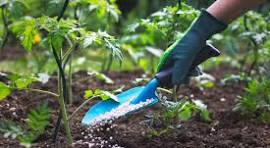
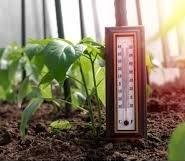

Essential Plant Care Tips
1. Watering
Watering is crucial for plant health. Here are some tips:
- Check the soil moisture before watering. Stick your finger about an inch into the soil; if it feels dry, it's time to water.
- Water deeply but infrequently. This encourages deep root growth.
- Use room temperature water to avoid shocking the plant.
- Be cautious with overwatering, as it can lead to root rot.
2. Sunlight
Different plants have different light requirements:
- Most houseplants prefer bright, indirect sunlight.
- Rotate your plants every few weeks to ensure even growth.
- Be mindful of seasonal changes in sunlight; adjust their location if necessary.
- Use sheer curtains to diffuse harsh sunlight for sensitive plants.
3. Soil
The right soil is essential for healthy plants:
- Use potting soil that is well-draining to prevent waterlogging.
- Consider the specific needs of your plant; some may require specialized soil (e.g., cactus mix, orchid mix).
- Repot your plants every 1-2 years to refresh the soil and provide more space for growth.
4. Fertilization

Fertilizing helps provide essential nutrients:
- Use a balanced, water-soluble fertilizer during the growing season (spring and summer).
- Follow the instructions on the fertilizer package for proper dilution and frequency.
- Reduce or stop fertilizing during the fall and winter when most plants enter dormancy.
5. Pruning
Regular pruning promotes healthy growth:
- Remove dead or yellowing leaves to encourage new growth.
- Trim back leggy growth to maintain a bushy appearance.
- Use clean, sharp scissors to prevent damage and disease.
6. Pest Control
Keep an eye out for pests:
- Inspect your plants regularly for signs of pests like aphids, spider mites, and mealybugs.
- Use insecticidal soap or neem oil as a natural remedy for infestations.
- Quarantine new plants for a few weeks to prevent introducing pests to your existing collection.
7. Humidity
Many houseplants thrive in humid environments:
- Consider using a humidifier in dry indoor conditions, especially during winter.
- Group plants together to create a microclimate with higher humidity.
- Place a tray of water with pebbles under your plants to increase humidity around them.
8. Temperature

Temperature affects plant growth:
- Most houseplants prefer temperatures between 65°F and 75°F (18°C to 24°C).
- Avoid placing plants near drafts, heaters, or air conditioning vents.
- Monitor temperature changes, especially during seasonal transitions.